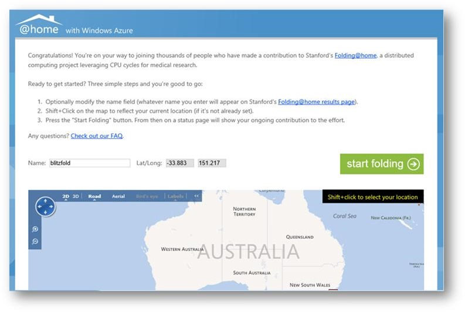
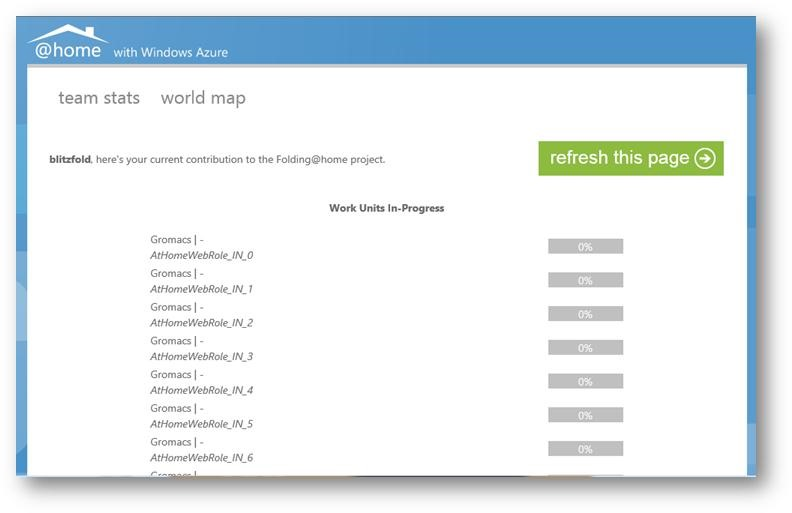

Folding@Home is a Stanford University research project into Alzheimer's, Huntington's, and many forms of cancer. Essentially it’s a distributed computing project (it probably could be classified as a useful SETI) where small units of work are farmed out to available computing resources.
This kind of problem is one that’s ideally suited to Windows Azure (and other cloud platforms), so if you’d like to learn about the new Windows Azure Portal and potentially contribute to some life-saving research here’s all you need to do:
- Sign up for a 90-day trial at https://aka.ms/AuAzTrial (you’ll need a credit card to prove who you are, but we won’t charge it unless you specifically give us permission to)
- Download the package from https://aka.ms/AuAzAtHome - extract the two files somewhere on your machine
- Create a storage account in the new portal called something unique
- Quick-Create a cloud service account in the new portal
- Add a new production deployment, call it something useful (for later reference) and upload the cspkg and cscfg files you extracted in (2) above
- Go to storage in the portal and click on your new storage account. Click the manage keys button in the app bar at the bottom and copy one of the keys to the clipboard
- Go to cloud services in the portal and click on your new cloud service. Click on the configure tab
- Scroll down to the athomewebrole settings. Update the dataconnectionstring setting, replace {name} with your storage account name (from (3)) and {key} with the key you copied in (6). Save.
- Wait a couple of minutes (probably about 120 sec)
- Go to cloud services in the portal and click on your cloud service’s url
- You should see something like this:
 - Click start folding and you’re away.
- After about 10 minutes check back at your folding url and you should see some progress:

{kind=link}
{kind=link}
Look at you - saving the world.